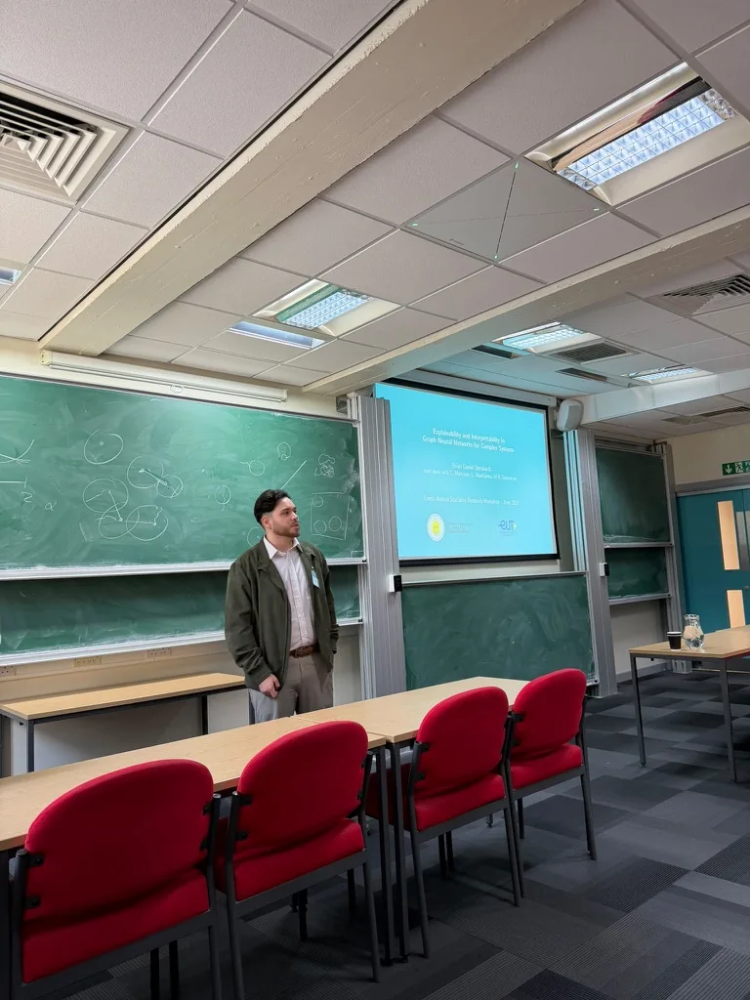
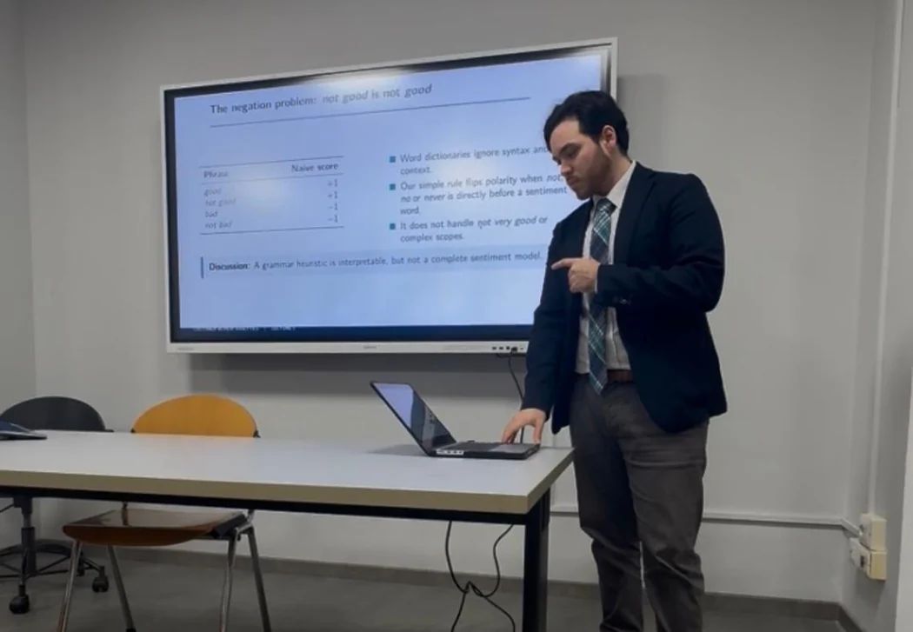
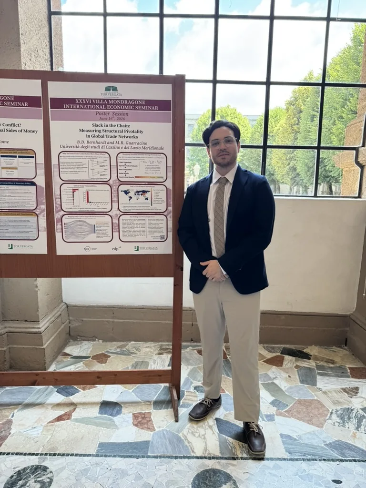
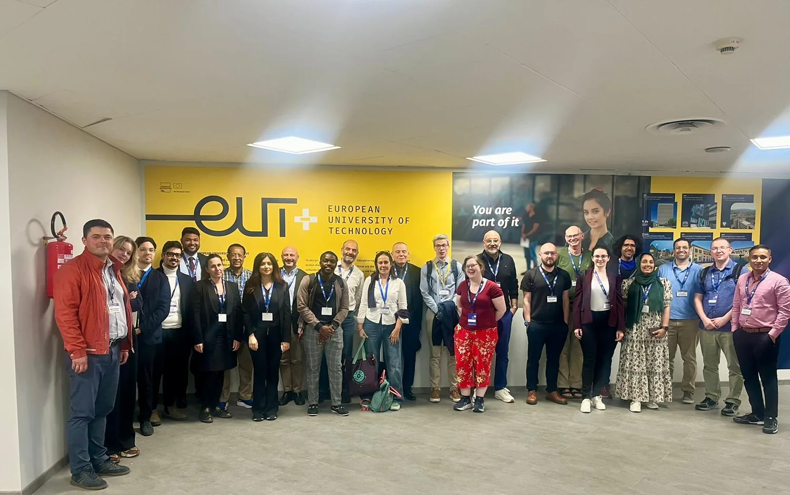
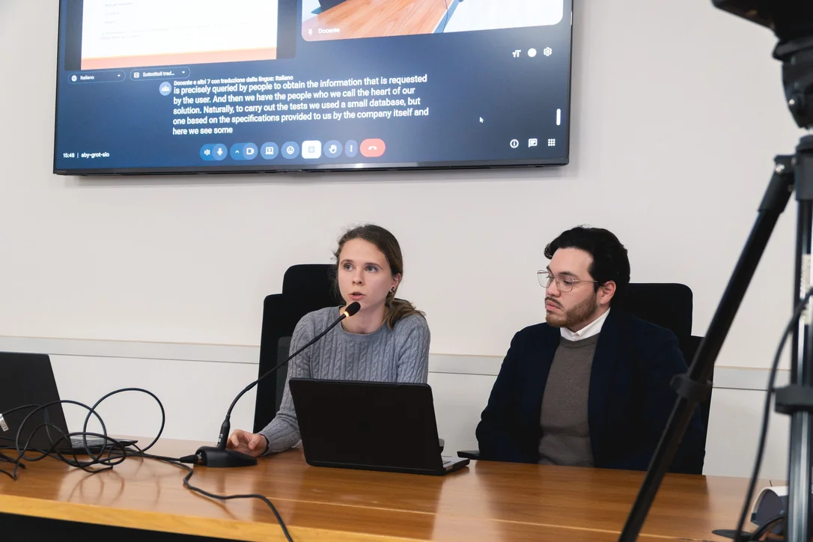
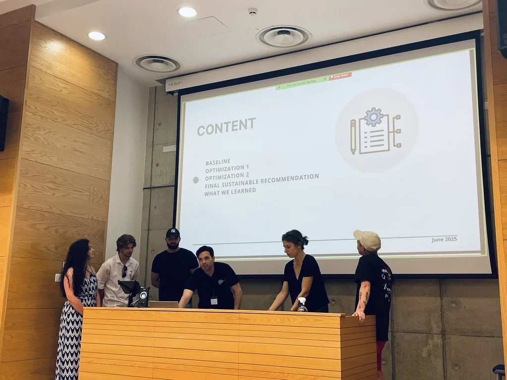
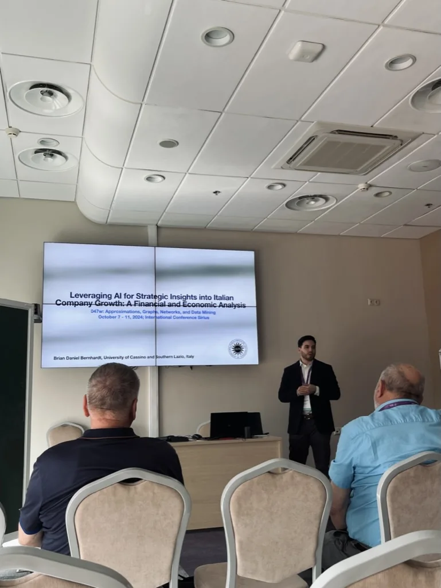
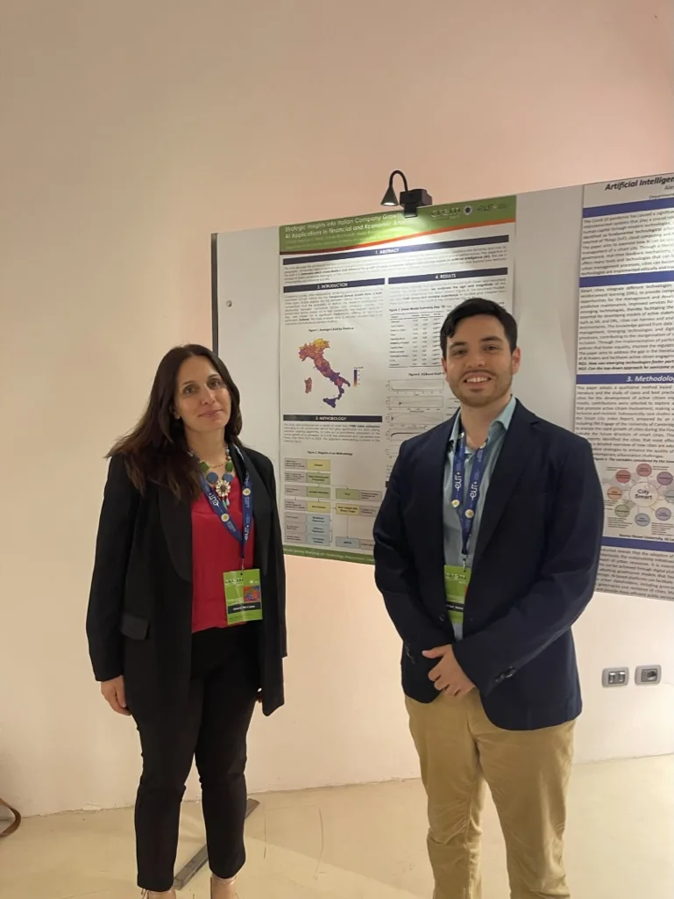
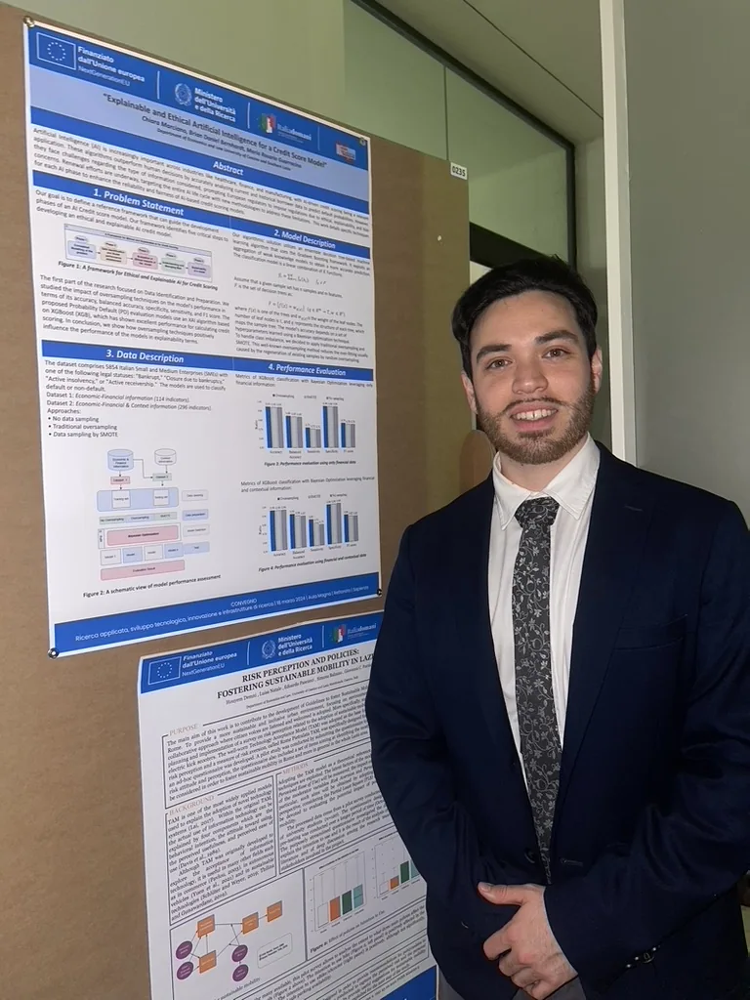
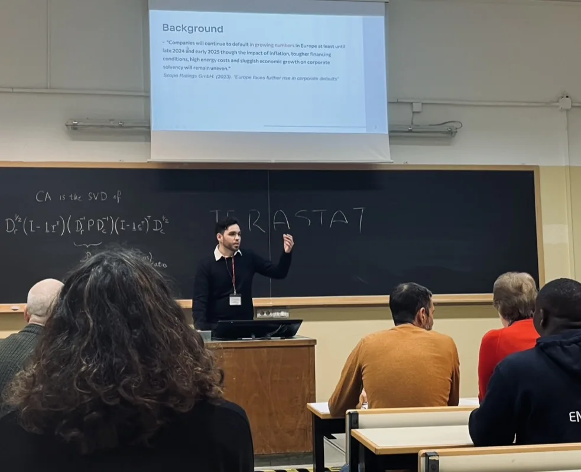

01Research
talk
Congreso FCE UAI 2026
More Markets Do Not Necessarily Mean Greater Diversification: Unsupervised Learning and Network Analysis of the Port of Rosario Export System
Universidad Abierta Interamericana
Research develops through conversations: presenting results, exchanging ideas, and learning from collaborators across institutions. Here are selected moments from conferences, poster sessions, international programmes, and academic activities.

At the Leeds Annual Statistics Research Workshop, I presented research on explainability and interpretability in graph neural networks, using practical examples from complex network analysis.
University of Leeds · United KingdomA curated photographic record of scientific presentations, international training, and collaborative activities.










Selected contributions without an accompanying photograph in this gallery.
More Markets Do Not Necessarily Mean Greater Diversification: Unsupervised Learning and Network Analysis of the Port of Rosario Export System
Universidad Abierta Interamericana
From Pivotality to Slack: Continuous Fragility in Bipartite Trade Networks
Network research conference
Interpretable and Explainable Methods for Statistical Network Analysis
Italian Statistical Society
Research stays at the University of Leeds and Universidad Abierta Interamericana have supported collaborations in graph methods, network fragility, and international trade. Earlier educational exchanges and international programmes have also shaped how I approach interdisciplinary work.
See my academic experience ↗Selected seminars with presentations, analysis scripts, and implementation notes.

Two practical sessions covering text cleaning, tokenization, bigrams, sentiment scoring with the Bing lexicon, UDPipe linguistic annotation, TF-IDF, and L1-regularized logistic regression for review-rating polarity. Materials emphasize interpretation, evaluation, and reproducibility.
The repository includes documentation and selected aggregate figures; raw customer reviews are not redistributed. This exercise predicts rating-derived labels, not independently verified emotional sentiment.

An introductory seminar on quantitative data analysis with R, using advertising expenditure and sales as a practical case study. Topics include data validation, exploratory analysis, correlations, simple and multiple linear regression, interpretation of coefficients and model fit, and scenario-based predictions.
Teaching demonstration using the Advertising dataset. The regression results describe predictive associations, not causal effects of advertising expenditure.
Institutional interviews and outreach articles, presented separately from peer-reviewed publications.
On doctoral research, returning to UAI as a researcher, and ongoing collaboration around the Port of Rosario.
Read the interview (Spanish) ↗An earlier reflection on studying in Argentina, international exchanges, and interests in international trade.
Read the profile (Spanish) ↗I’m interested in research collaborations, academic exchanges, and applied analytics.